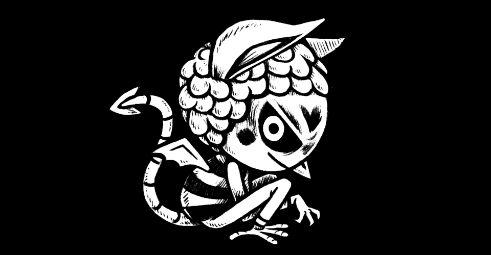
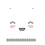
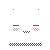
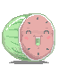

About
About Projects
Projects Books
Books Games
Games Stories
Stories Store
Store Notes
Notes How-to
How-to
- Writes stories.
- Lives on pino(since 2016).
- Speaks Canadian French, English, some Japanese.
- Gender agnostic, if you must talk about me use gender neutral pronouns.
I am a cartoonist and sailor, currently based in the Salish Sea, where the weather is mild and kinder to sailboats, but my roots are in Québec. I enjoy drawing with pencils and ballpoint pens, and am fond of lacto-fermentation, bikes, and seabirds.


With the project hundredrabbits, I write about practical liveaboard skills/knowledge, and food preservation, while producing fun-weird art projects with my best friend and most treasured human devine.Living on a boat with the goal of conserving energy use has shaped how I work in a very big way. My studio is powered by 200W of solar. I prioritize art done on paper. Digital works are done with the tools of my studio and/or with open-source software(Gimp). For more details on how I work, read this article I wrote named Working Offgrid Efficiently
I occasionally make art for magazines, children's books, as well as visuals for software and games (see publications). My first self-published game oquonie was nominated for a visual arts award at the 2015 Independent Games Festival in San Francisco. In 2020 I published busy doing nothing, a book documenting my 50-day sail from Shimoda to Victoria. I am super proud of that book, I hope that you find the time to read it!
View...
- My full list publications
- All the projects I've released
- My press appearances
- The tools that I use.
- View my resume.
- Ways to contact me
I spend my days documenting repairs on the boat, making recipes for grimgrains, documenting worthwhile seafaring and communication skills with Rabbit Waves, as well as making small art projects, illustration and toys.
My partner devine & I lived in japan for two years(2012-2014), and after returning to Canada we decided to try and return there by sailboat. And so, from 2016 to 2020, we circumnavigated the Pacific Ocean by sail, passing through Mexico, French Polynesia, Cook Islands, Niue, Tonga, New Zealand, Fiji, The Marshall Islands and Japan.

I've been making websites since I was a teenager, I would farm free geocities space by hot-linking between mutiple accounts—I've since abandoned that practice. These days, I enjoy making and maintaining simple websites. I manage Grimgrains, and 100r.co. I used to have multiple sites about Digimon and X-men: Evolution, too many...Contact
Contact me for art, cormorant, or website related inquiries. I am not interested in producing NFTs for anyone, nor do I accept crypto payments.
Small online community involvement
In the early 2000's I was known as "Esse" online. I was active in the FDD(fictional digidestined) community, with the websites The Forgotten Digidestined(1999-2006), Esse's Digimon Adoptions(2001-2005) later, EDA became Sagari-Cross(2005-2009) hosted by Legend (injenn.net) until I started self-hosting the site myself. I hosted a forum (Zephopolis) where I would roleplay characters with friends. Back then, roleplaying with friends online was a big part of my life. In 2005 Sagari-Cross became predominantly a portfolio website (it's sad that this happened). In 2011 I changed my domain name to kokorobot.ca.
Later, I discovered art hosting sites like DeviantArt(Esserawks & Mintenko, accounts no longer online) and SheezyArt, and spent a lot of time on CFSL and the Isopharmacy forums. Isopharmacy was an artistic community, we would create art challenges and talk about art, games etc. In 2010, myself and Devine created the studio drownspire. Together we designed and sold small figurines (vambits), apparel, jewelery and books. At the time, I helped organized Drink & Draw events in Montreal. These events inspired the creation of art books (Erri) and the comic collective Merure. We released 3 Merure books in total, under the non-profit name of MachineMachine.
Now, I hang around the merveilles community on Mastodon.
Experience
In high school, I enjoyed working with wood and worked on many physical art projects.
I completed a two-year creative arts program at the Champlain Regional College on the south shore of Montreal(2002-2004), where I learned how to do digital art, movie-making, as well as sculpture and painting (it was a very varied program). While there, I helped found the Visual Arts Club in the school.
Then I attended the Cégep du Vieux Montréal and enrolled in their excellent 2d animation course(2005-2008), where I produced the short film uno.
From 2007 to 2016, I worked in-house at a variety of art, game and animation studios like Mandarine 24, Volta, Pascal Blais Studio and Sava Transmédia. In 2012, I moved to Japan and worked at a—then small— animation studio in Shinjuku. I moved back to Montréal in 2014 and worked at Hibernum Créations and Télé-Québec. Throughout my career, I did a lot of freelance work for edition companies, illustrating children's books for ERPI, Boréal, Courte-Echelle, Transcontinental, Druide, Bayard Canada etc. After 2016, I focused on making projects for hundredrabbits.
favorites
Books
- Roadside Picnic, Arkady and Boris Strugatsky
- Le Péril Bleu, Maurice Renard
- Watership Down, Richard Adams
- Death, the Duck and the Tulip, Wolf Erlbruch
- Big Wolf & Little Wolf, Nadine Brun-Cosme
- North to the Night, Alvah Simon
- On Food and Cooking, Harold McGee
- Akira, Katsuhiro Otomo
- Cyberiad, Stanislaw Lem
- Sailing the Farm, Kenneth Neumeyer
- Persepolis, Marjane Satrapi
- A Sand County Almanac, Aldo Leopold
- Animal Farm, George Orwell and Russel Baker
- One Straw Revolution, Masanobu Fukuoka
- How to Do Nothing, Jenny Odell
- Blade of the Immortal, Hiroaki Samura
- Dorohedoro, Q. Hayashida
- The Summer Book, Tove Jansson
- We Have Always Lived at the Castle, Shirley Jackson
- The Curve of Time, Wylie Blanchett
- West With the Night, Beryl Markham
- Lord of the Flies, William Golding
- The Stories of Ray Bradbury, Ray Bradbury
- The Tartar Steppe, Dino Buzzati
Series
Trigun, The Expanse, Kaamelott, Future Boy Conan, What we do in the Shadows, Avatar the Last Airbender, Daria, The Good Place, Brooklyn Nine Nine, Flea Bag, I'm a Virgo
Games
Sword & Sworcery, Legend of Zelda: Windwaker, Jak & Daxter series.
It's funny, my favorite gaming memories are never because the games themselves were especially memorable, or good, but because of the people that were with me. I loved playing Resident Evil with my sisters as a kid, we were all too scared to play alone so we played together. Another sister-related memory, was when playing Mario Kart on SNS... we wouldn't hurt each other, we'd go around taking items, hoping to get a banana, then we'd take the bananas and find safe places for them around the levels(once in a while, someone would violate the safe banana pact, offing a banana, and then some shell-throwing would ensue). I loved playing Starcraft: Brood War with Devine in the evening, drink in hand, messing around. Also, that time I smashed up my knee while cycling in Tokyo, we were supposed to go out but couldn't because of my injury, so Devine and Chase set up a computer and we played Borderlands all day.
Music
Lauren Bousfield, Placebo, Circa Survive, Psyclon Nine, Trash 80, Purity ring, Kenshi Yonezu, Floppy, Mew, Oxxxymiron, Immoor, Atreyu, Stromae, Sia, Daniel L.K. Caldwell, Motion City Soundtrack, TOMM¥ €A$H, Miyagi, Wanima, Icon of Coil
People
Ursula Le Guin, Ray Bradbury, Bernard Moitessier, Sven Irvind, Lin & Larry Pardey, Dieter Rams, Wendell Berry, Aldo Leopold, Val Plumwood, Roger Taylor, Wes Jackson, Annie Hill, Ernesto Tross
Films
Omoide Poro Poro, Shoplifters, Santa Sangre, The Dresser(1983), Okja, Dinner with Andre, Parasite, Sorry to Bother You, The Breakfast Club, Akira, Mindgame, Existenz, Prospect, Catsoup, Tampopo, Nausicaa, Redline, Trava Fist Planet, Summer Wars ,The Lost Boys, Ginger Snaps, Only Lovers Left Alive, What we do in the Shadows, Fright Night, Kiki's Delivery Service, Burn After Reading, Return of the Living Dead, Fargo, Vampire hunter D, 28 days Later, Lost in Translation, Rocky Horror Picture Show, Blade Runner, Suzume
Artists
Hiroaki Samura, Q. Hayashida, Junji Ito, Gustave Dore, Matthew Forsythe, Em Caroll, Bob Rafei, Kate Beaton, Kazu Kibuishi, Shaun Tan